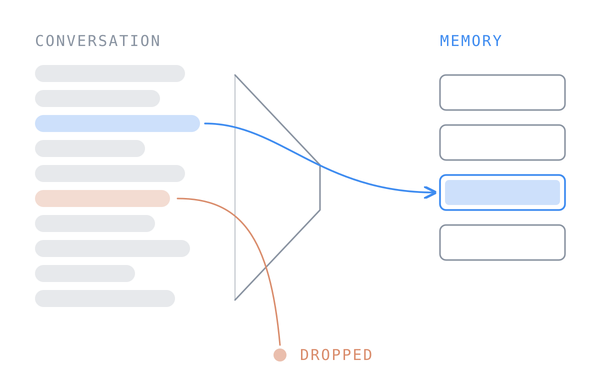

HumanSys 2026
Will My Assistant Remember My Allergy? What Personal LLM Assistants Forget When Conversation Memory Is Compressed
ACM Workshop on Human-Centered Systems (HumanSys), 2026 · co-located with ACM MobiCom 2026
A memory-compression framework for personal LLM assistants that retains long-term user preferences while reducing storage cost.